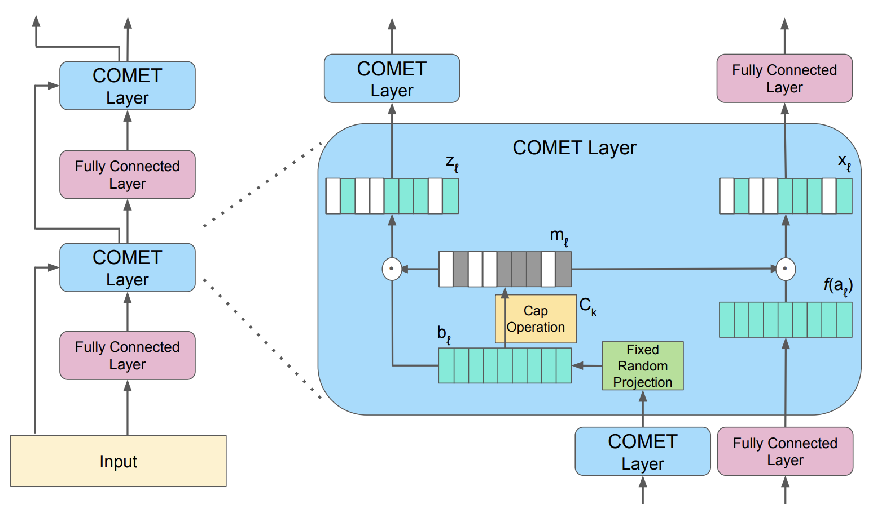
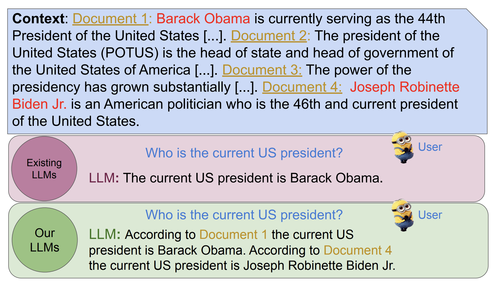
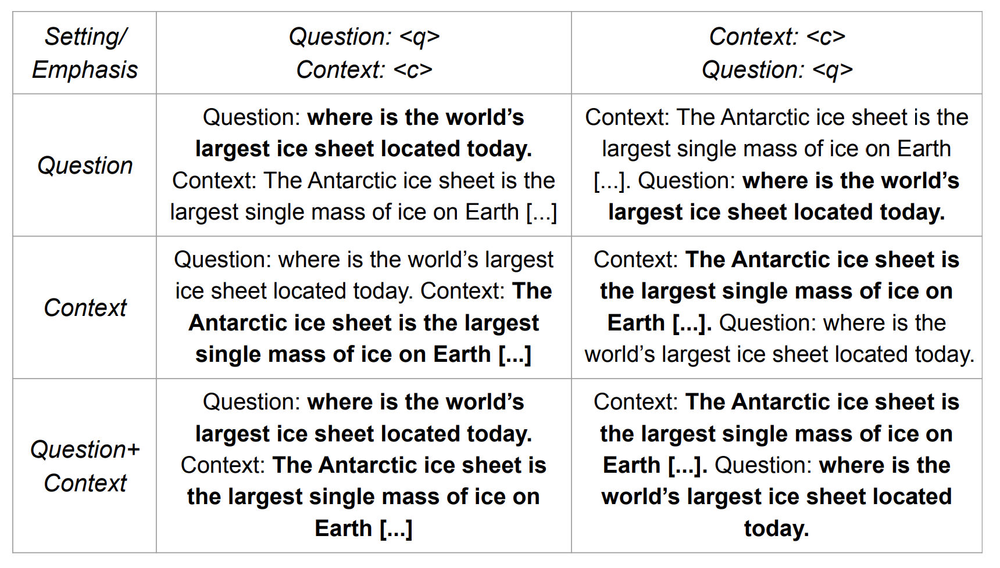
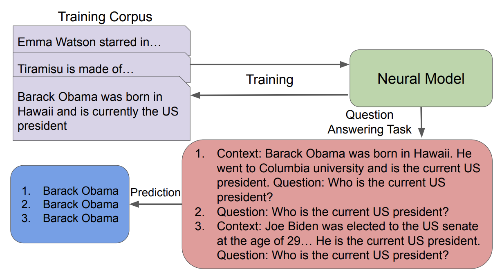
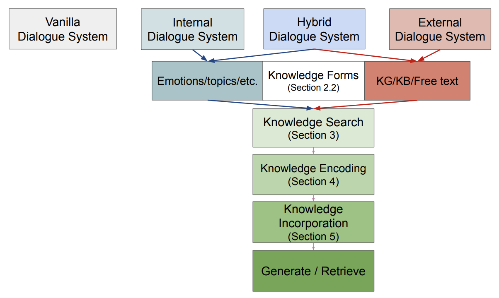
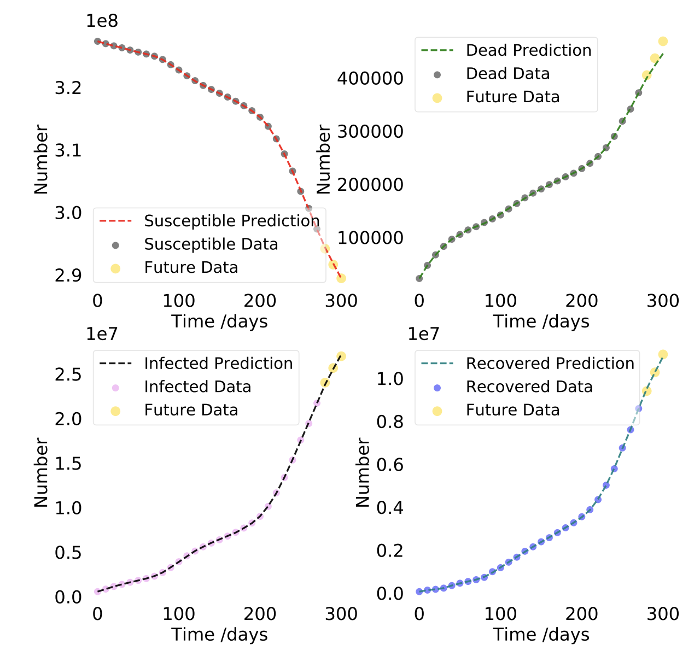

Finalizing my PhD this Spring and on the job market!
Currently a PhD student at CU Boulder, advised by Katharina Kann and Larry Hunter.
Education: BSc in computational and applied mathematics with a focus on epidemiology, a minor in statistics, on the pre-med track.
Research Interests: Artificial general intelligence, knowledge-enhanced question answering, continual learning, modularity, factuality, biologically-inspired algorithms.
Hobbies: outside of academia I spend most of my time practicing Muay Thai, hiking with my puppy (Buffy), baking, snowboarding, and scuba diving.
Projects
Some previous research projects

More Experts Than Galaxies: Conditionally-overlapping Experts With Biologically-inspired Fixed Routing
The evolution of biological neural systems has led to both modularity and sparse coding, which enables efficiency in energy usage, and robustness across the diversity of tasks in the lifespan. In contrast, standard neural networks rely on dense, non-specialized architectures, where all model parameters are simultaneously updated to learn multiple tasks, leading to representation interference. Current sparse neural network approaches aim to alleviate this issue, but are often hindered by limitations such as 1) trainable gating functions that cause representation collapse; 2) non-overlapping experts that result in redundant computation and slow learning; and 3) reliance on explicit input or task IDs that impose significant constraints on flexibility and scalability. In this paper we propose Conditionally Overlapping Mixture of ExperTs (COMET), a general deep learning method that addresses these challenges by inducing a modular, sparse architecture with an exponential number of overlapping experts. COMET replaces the trainable gating function used in Sparse Mixture of Experts with a fixed, biologically inspired random projection applied to individual input representations. This design causes the degree of expert overlap to depend on input similarity, so that similar inputs tend to share more parameters. This facilitates positive knowledge transfer, resulting in faster learning and improved generalization. We demonstrate the effectiveness of COMET on a range of tasks, including image classification, language modeling, and regression, using several popular deep learning architectures.

Adaptive Question Answering: Enhancing Language Model Proficiency for Addressing Knowledge Conflicts with Source Citations
Resolving knowledge conflicts is a crucial challenge in Question Answering (QA) tasks, as the internet contains numerous conflicting facts and opinions. While some research has made progress in tackling ambiguous settings where multiple valid answers exist, these approaches often neglect to provide source citations, leaving users to evaluate the factuality of each answer. On the other hand, existing work on citation generation has focused on unambiguous settings with single answers, failing to address the complexity of real-world scenarios. Despite the importance of both aspects, no prior research has combined them, leaving a significant gap in the development of QA systems. In this work, we bridge this gap by proposing the novel task of QA with source citation in ambiguous settings, where multiple valid answers exist. To facilitate research in this area, we create a comprehensive framework consisting of: (1) five novel datasets, obtained by augmenting three existing reading comprehension datasets with citation meta-data across various ambiguous settings, such as distractors and paraphrasing; (2) the first ambiguous multi-hop QA dataset featuring real-world, naturally occurring contexts; (3) two new metrics to evaluate models’ performances; and (4) several strong baselines using rule-based, prompting, and finetuning approaches over five large language models. We hope that this new task, datasets, metrics, and baselines will inspire the community to push the boundaries of QA research and develop more trustworthy and interpretable systems.

It Is Not About What You Say, It Is About How You Say It: A Surprisingly Simple Approach for Improving Reading Comprehension
Natural language processing has seen rapid progress over the past decade. Due to the speed of developments, some practices get established without proper evaluation. Considering one such case and focusing on reading comprehension, we ask our first research question: 1) How does the order of inputs – i.e., question and context – affect model performance? Additionally, given recent advancements in input emphasis, we ask a second research question: 2) Does emphasizing either the question, the context, or both enhance performance? Experimenting with 9 large language models across 3 datasets, we find that presenting the context before the question improves model performance, with an accuracy increase of up to 31%. Furthermore, emphasizing the context yields superior results compared to question emphasis, and in general, emphasizing parts of the input is particularly effective for addressing questions that models lack the parametric knowledge to answer. Experimenting with both prompt-based and attention-based emphasis methods, we additionally find that the best method is surprisingly simple: it only requires concatenating a few tokens to the input and results in an accuracy improvement of up to 36%, allowing smaller models to outperform their significantly larger counterparts.
Comparing Template-based and Template-free Language Model Probing
The differences between cloze-task language model (LM) probing with 1) expert-made templates and 2) naturally-occurring text have often been overlooked. Here, we evaluate 16 different LMs on 10 probing datasets -- 4 template-based and 6 template-free -- in multiple domains to answer the following research questions: (RQ1) Do model rankings differ between the two approaches? (RQ2) Do models' absolute scores differ between the two approaches? (RQ3) Do the answers to RQ1 and RQ2 differ between general and domain-specific models? Our findings are: 1) Template-free and template-based approaches often rank models differently, except for the top domain-specific models. 2) Scores decrease by up to 42$ Acc@1 when comparing parallel template-free and template-based prompts. 3) Perplexity is negatively correlated with accuracy in the template-free approach, but, counter-intuitively, they are positively correlated for template-based probing. 4) Models tend to predict the same answers frequently across prompts for template-based probing, which is less common when employing template-free techniques.

Desiderata For The Context Use Of Question Answering Systems
Prior work has uncovered a set of common problems in state-of-the-art context-based question answering (QA) systems: a lack of attention to the context when the latter conflicts with a model's parametric knowledge, little robustness to noise, and a lack of consistency with their answers. However, most prior work focus on one or two of those problems in isolation, which makes it difficult to see trends across them. We aim to close this gap, by first outlining a set of -- previously discussed as well as novel -- desiderata for QA models. We then survey relevant analysis and methods papers to provide an overview of the state of the field. The second part of our work presents experiments where we evaluate 11 QA systems on 4 datasets according to all desiderata at once. We find many novel trends, including (1) systems that are less susceptible to noise are not necessarily more consistent with their answers when given irrelevant context; (2) most systems that are more susceptible to noise are more likely to correctly answer according to a context that conflicts with their parametric knowledge; and (3) the combination of conflicting knowledge and noise can reduce system performance by up to 96$. As such, our desiderata help increase our understanding of how these models work and reveal potential avenues for improvements.

Who Are All The Stochastic Parrots Imitating? They Should Tell Us!
Both standalone language models (LMs) as well as LMs within downstream-task systems have been shown to generate statements which are factually untrue. This problem is especially severe for low-resource languages, where train- ing data is scarce and of worse quality than for high-resource languages. In this opinion piece, we argue that LMs in their current state will never be fully trustworthy in critical settings and suggest a possible novel strategy to handle this issue: by building LMs such that can cite their sources – i.e., point a user to the parts of their training data that back up their out- puts. We first discuss which current NLP tasks would or would not benefit from such models. We then highlight the expected benefits such models would bring, e.g., quick verifiability of statements. We end by outlining the individ- ual tasks that would need to be solved on the way to developing LMs with the ability to cite. We hope to start a discussion about the field’s current approach to building LMs, especially for low-resource languages, and the role of the training data in explaining model generations.
Emerging Challenges in Personalized Medicine: Assessing Demographic
Effects on Biomedical Question Answering Systems
State-of-the-art question answering (QA) models exhibit a variety of social biases (e.g., with respect to sex or race), generally explained by similar issues in their training data. However, what has been overlooked so far is that in the critical domain of biomedicine, any unjustified change in model output due to patient demographics is problematic: it results in the unfair treatment of patients. Selecting only questions on biomedical topics whose answers do not depend on ethnicity, sex, or sexual orientation, we ask the following research questions: (RQ1) Do the answers of QA models change when being provided with irrelevant demographic information? (RQ2) Does the answer of RQ1 differ between knowl- edge graph (KG)-grounded and text-based QA systems? We find that irrelevant demographic information change up to 15% of the answers of a KG-grounded system and up to 23% of the answers of a text-based system, including changes that affect accuracy. We conclude that unjustified answer changes caused by patient demographics are a frequent phenomenon, which raises fairness concerns and should be paid more attention to.

Mind the Knowledge Gap: A Survey of Knowledge-enhanced Dialogue Systems
Many dialogue systems (DSs) lack characteristics humans have, such as emotion perception, factuality, and informativeness. Enhancing DSs with knowledge alleviates this problem, but, as many ways of doing so exist, keeping track of all proposed methods is difficult. Here, we present the first survey of knowledge-enhanced DSs. We define three categories of systems – internal, external, and hybrid – based on the knowledge they use. We survey the motivation for enhancing DSs with knowledge, used datasets, and methods for knowledge search, knowledge encoding, and knowledge incorporation. Finally, we propose how to improve existing systems based on theories from linguistics and cognitive science.

Disease Informed Neural Networks
We introduce Disease Informed Neural Networks (DINNs) — neural networks capable of learning how diseases spread, forecasting their progression, and finding their unique parameters (e.g. death rate). Here, we used DINNs to identify the dynamics of 11 highly infectious and deadly diseases. These systems vary in their complexity, ranging from 3D to 9D ODEs, and from a few parameters to over a dozen. The diseases include COVID, Anthrax, HIV, Zika, Smallpox, Tuberculosis, Pneumonia, Ebola, Dengue, Polio, and Measles.